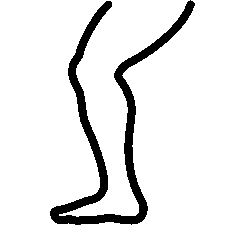

<!--
  Generated template for the EjercicioaleatorioPage page.

  See http://ionicframework.com/docs/components/#navigation for more info on
  Ionic pages and navigation.
-->
<ion-header>

  <ion-navbar>
    <ion-title>Ejercicios de piernas</ion-title>
  </ion-navbar>

</ion-header>


<ion-content padding>
    
  <ion-list>
    <div *ngFor="let ejercicio of listaEjercicios | async" >
      <ion-item *ngIf="ejercicio.Categoria == 'piernas' "  (click)="temporizador(ejercicio.Descanso)">
        <h1>
          <b>{{ejercicio.Tipo}}</b>
        </h1>
        <p style="color: orange">Repeticiones: {{ejercicio.Repeticiones}}</p>
      </ion-item>
    </div>
  </ion-list>
</ion-content>